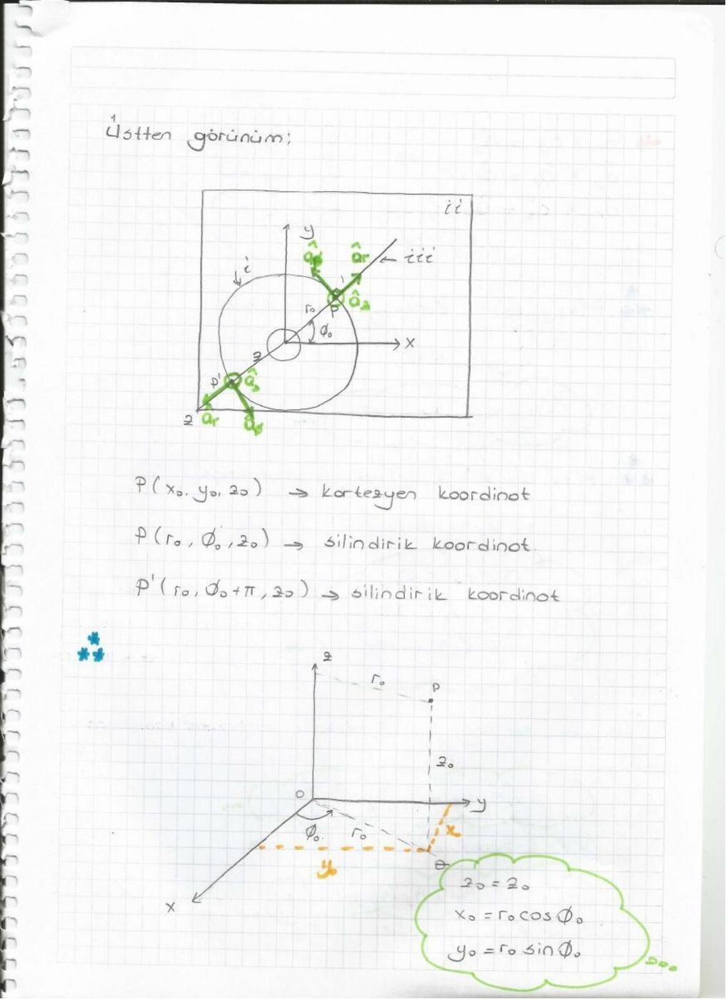
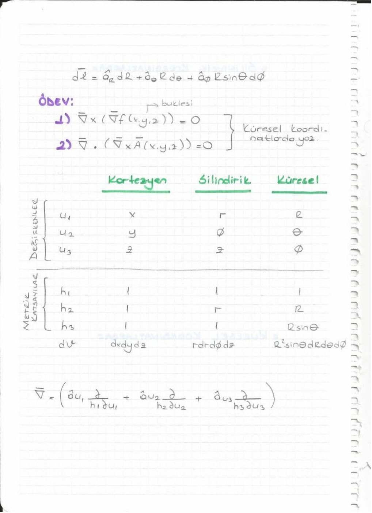
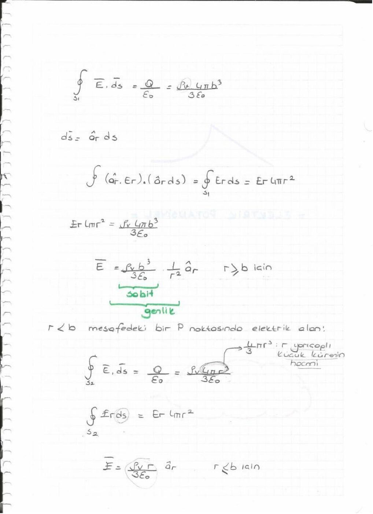
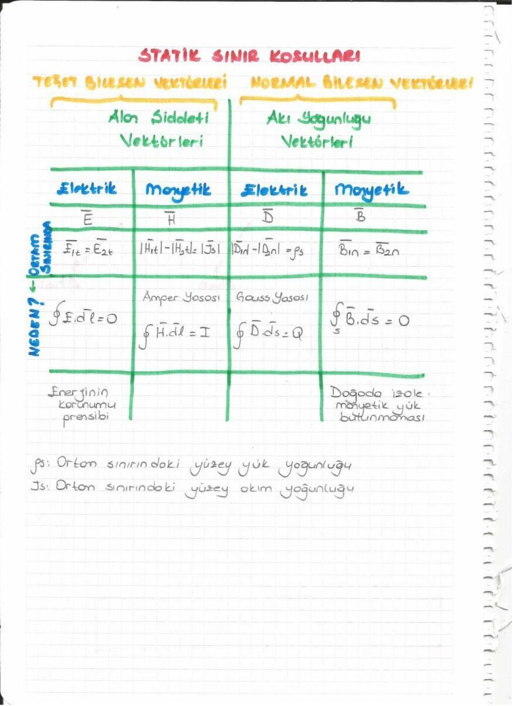

· EEM224
EEM224 Electromagnetics I: Vector Analysis, Electrostatics and Magnetostatics: A Friend's Notebook
EEM224 – Elektromanyetik I · 20.03.2014 · 17.10.2026
This post is a topic and formula digest of a friend's 88-page Electromagnetics I course notebook. Personal information has been removed. The source PDF was created on March 20, 2014. A size-reduced PDF, regenerated under an anonymous file name, can be downloaded at the end of the post.
Spectrum and Waves (pages 1–5)
The notebook begins with a spectrum showing the radio, microwave, infrared, visible light, ultraviolet, X-ray, and gamma-ray regions. Acoustic waves are shown separately. In a transverse wave the oscillation is perpendicular to the direction of propagation; in a longitudinal wave it is parallel.
λ = vT = v/f, f = 1/T. For an electromagnetic wave in vacuum, v = c ≈ 3×10⁸ m/s. At constant speed, the wavelength decreases as the frequency increases.
Note: The notebook lists the decrease in range and the increase in information capacity with rising frequency as if it were a general rule. These depend on the medium, losses, bandwidth, and system conditions.
Scalar and Vector Fields (pages 6–9)
A scalar quantity has only a value; a vector has a magnitude and a direction. Temperature and charge density are scalar examples; force and electric field are vector examples. These position-dependent quantities form fields.
A = â_A |A|, â_A = A/|A|.
Addition is done by the triangle or parallelogram method. A−B is A+(−B). Scalar multiplication kA changes the magnitude of the vector and, depending on the sign, its direction.
A·B = |A||B|cosθ; A×B = â_n |A||B|sinθ.
A·B = B·A, A×B = −B×A, A·A = |A|², and A×A = 0. The scalar projection of A onto the direction of B is A·â_B.
Orthogonal Coordinates (pages 10–18)
The purpose of a coordinate system is to express a point and a vector. In the Cartesian system the x, y, and z axes are mutually perpendicular. Cylindrical coordinates are denoted r,φ,z; spherical coordinates are denoted R,θ,φ.
- Cylindrical: x = r cosφ, y = r sinφ, z = z.
- Spherical: x = R sinθ cosφ, y = R sinθ sinφ, z = R cosθ.
- Cylindrical radius r = √(x²+y²); spherical radius R = √(x²+y²+z²).
- Spherical polar angle 0≤θ≤π; azimuth 0≤φ<2π.
In Cartesian components, |A| = √(A_x²+A_y²+A_z²), A·B = A_xB_x+A_yB_y+A_zB_z.
A×B = (A_yB_z−A_zB_y)â_x+(A_zB_x−A_xB_z)â_y+(A_xB_y−A_yB_x)â_z.

Line, Surface, and Volume Integrals (pages 19–23)
The work done by a force along a small path is ΔW = F·Δl. The total work along the path is W = ∫F·dl. If the force is perpendicular to the path, the contribution is zero.
The flux through a surface is found as Φ = ∫A·dS. The surface vector points along the normal; the tangential component of the field makes no contribution. For a closed surface, ∮ is used.
The mass of a body with density d(x,y,z) is m = ∫_V d dv'. Here there is a scalar product rather than a vector one.
Gradient, Divergence, Curl (pages 24–28)
∇ = â_x∂/∂x + â_y∂/∂y + â_z∂/∂z.
Gradient: ∇f = â_x∂f/∂x+â_y∂f/∂y+â_z∂f/∂z. It produces a vector from a scalar and points in the direction of fastest increase. For f = 3x+4y+5z, ∇f = 3â_x+4â_y+5â_z; for f = 3x²+4y+5z², ∇f = 6xâ_x+4â_y+10zâ_z.
Divergence: ∇·A = ∂A_x/∂x+∂A_y/∂y+∂A_z/∂z. It produces a scalar from a vector.
Curl: ∇×A = (∂A_z/∂y−∂A_y/∂z)â_x+(∂A_x/∂z−∂A_z/∂x)â_y+(∂A_y/∂x−∂A_x/∂y)â_z. It produces a vector from a vector.
Two zero identities: ∇×(∇f)=0 and ∇·(∇×A)=0.
Integral Examples and Metric Coefficients (pages 29–36)
For a path in the z=0 plane that goes first in the x direction and then in the y direction, the line integral of the field A=3xâ_x+5yâ_y+3xy e^z â_z is found to be 3x₀²/2+5y₀²/2. Since the path lies in the plane, the z component makes no contribution.
The flux of a field with A_z=5 through a rectangular surface in the z=0 plane is 5(x₁−x₀)(y₁−y₀).
On a quarter circle, dl = â_φ r dφ is used. In the notebook, for A_φ=r² and radius a, the integral is found to be πa³/2.
| Coordinates | Metric coefficients | Volume element |
|---|---|---|
| Cartesian x,y,z | 1,1,1 | dx dy dz |
| Cylindrical r,φ,z | 1,r,1 | r dr dφ dz |
| Spherical R,θ,φ | 1,R,R sinθ | R² sinθ dR dθ dφ |
Cylindrical dl = â_r dr+â_φ r dφ+â_z dz; spherical dl = â_R dR+â_θ R dθ+â_φ R sinθ dφ.
In the quiz example, it is explained that the equality A·B=A·C does not by itself imply B=C. A·(B×A)=0, because the vector B×A is perpendicular to A.

Divergence and Stokes Theorems (pages 37–38)
∮_S A·dS = ∫_V (∇·A)dv.
∮_C A·dl = ∫_S (∇×A)·dS.
The notebook also touches on the determination of a field by its divergence and curl.
Note: Appropriate boundary conditions are also required for a field to be uniquely determined. The surface in Stokes' theorem does not itself have to be closed; the contour is the boundary of the surface.
Electrostatic Postulates and Coulomb's Law (pages 38–50)
E = lim_(q→0) F/q. In a static field, ∇×E=0 and ∇·E=ρ_v/ε₀.
Integral forms: ∮_C E·dl=0, ∮_S E·dS=Q/ε₀. Because the closed-path integral is zero, the integral between two points is independent of the path.
For a point charge at the origin, E = qâ_R/(4πε₀R²). The field at point r due to a charge at r′ is:
E(r) = q(r−r′)/(4πε₀|r−r′|³).
If there are multiple charges, vector summation is performed:
E(r) = (1/4πε₀)Σ qᵢ(r−rᵢ′)/|r−rᵢ′|³.
The notebook gives examples of two charges of equal magnitude cancelling each other at the midpoint, and of resolving the fields of charges at different positions into components.
Continuous Distributions and Gauss's Law (pages 51–57)
For a volume distribution, dq=ρ_v dv; the Coulomb contribution of each small charge is integrated. For symmetric structures, choosing a Gaussian surface simplifies the calculation.
- Infinite uniformly charged wire: E = ρ_l â_r/(2πε₀r).
- Infinite uniformly charged plane: E = ±ρ_s â_z/(2ε₀).
- The point-charge field is inversely proportional to the square of the distance, the wire field to the distance; the infinite-plane field is independent of distance.
For a sphere of radius b containing a constant ρ_v:
E = ρ_v r â_r/(3ε₀), r<b;
E = ρ_v b³ â_r/(3ε₀r²), r>b.
The field increases linearly inside; beyond the surface it decreases as 1/r².

Potential, Equipotentials, and the Dipole (pages 58–68)
E = −∇V. The potential difference is V₂−V₁ = −∫₁²E·dl. When V(∞)=0 is chosen, V=q/(4πε₀R) for a point charge.
Potentials add as scalars, fields as vectors. Equipotential surfaces are perpendicular to field lines; no electrical work is done when moving a charge along these surfaces.
For charges ±q separated by d, the dipole moment is p=qd; its direction is taken from negative to positive. In the far region (R≫d):
V ≈ qd cosθ/(4πε₀R²) = p·â_R/(4πε₀R²).
Magnetostatic Fields and Ampère's Law (pages 69–74)
Steady magnetic fields are produced by moving charges or magnets. ∇·B=0, and in vacuum ∇×B=μ₀J.
The integral forms are ∮_S B·dS=0 and ∮_C B·dl=μ₀I. Magnetic field lines are closed. The unit of volume current density is A/m², and that of surface current density is A/m.
For a long straight conductor of radius b in which the current is uniformly distributed over the cross-section:
B = μ₀Ir â_φ/(2πb²), r<b;
B = μ₀I â_φ/(2πr), r>b.
In the interior region of an ideal toroid with N turns, B = μ₀NI â_φ/(2πr); in the ideal model the field is zero in the central opening and in the exterior region. The magnetic dipole moment of a circular current loop is given as m=Iπb²â_z.
Magnetic Boundary Conditions (pages 75–80)
At the interface of two media, the normal magnetic flux density is continuous: B₁n=B₂n. The difference of the tangential H components is related to the surface current density. If there is no surface current, H₁t=H₂t.
For a linear isotropic medium, B=μH. Thus, with no surface current, B₁t/μ₁=B₂t/μ₂. In the notes, ε, μ, and σ are listed as the parameters that characterize the medium.

Electrostatic Energy and Polarization (pages 81–88)
The energy of a charge system is the total work done to bring the charges from infinity to their positions. For two charges, W=Q₁Q₂/(4πε₀R₁₂)=½(Q₁V₁+Q₂V₂).
For N discrete charges, W=½ΣQᵢVᵢ; for a continuous volume charge, W=½∫ρ_vV dv.
In a dielectric, the dipole moment per unit volume is the polarization P. Its unit is C/m². The electric flux density is D=ε₀E+P; for a linear medium it is written D=εE. The general form of Gauss's law is ∮D·dS=Q.
Note: On some pages of the notebook there is notation in the unit of electric flux density that could be confused with volume density; the unit is C/m² for D and P, and C/m³ for ρ_v.